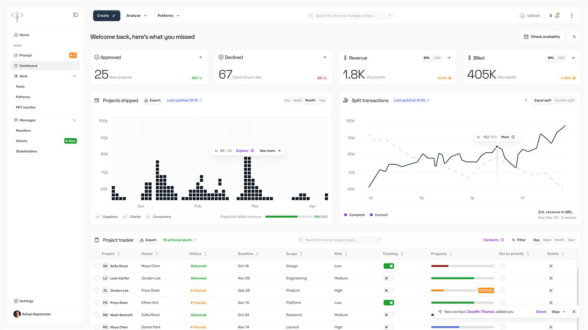
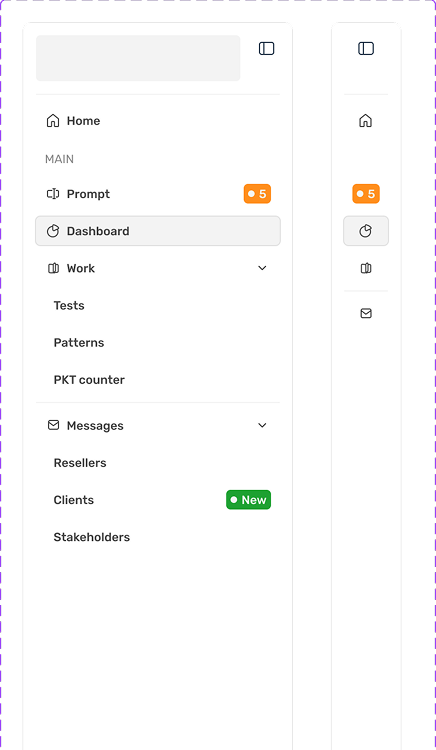
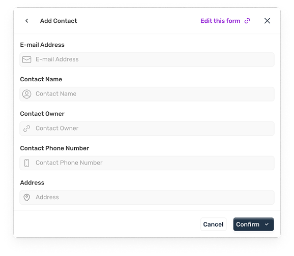
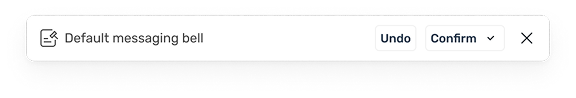
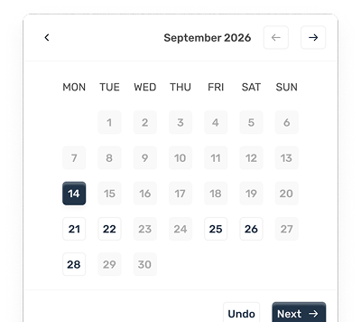
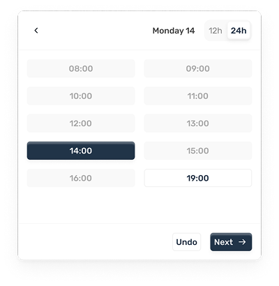

Euristike Design System
My own design system.
Minimalist, clean and diverse. Made to be versatile and agnostic. Needed to build my own projects with a touch of my own craft and so Euristike DS was built.

Euristike®Role
UX/Product Designer
Duration
October 26 - Now
Team
Just me
Conception and details
From the ground up I studied the best practices for a scalable and solid system. From the tokens, semantics, collections, components, properties, variants, nested instances, slots and structure - Euristike was conceived bearing in mind its optimization for iteration, code connection and AI workflows.
Organizing individual Skill.md files for each component group and teaching AI how to correctly apply each component when iterating screens was a essential part of the process of conception.
AI is evolving fast. Everything is subject to change - and so is the DS itself. A lot of the DS is still under progress and evolving like an live organism. For now, a total of 298 tokens were created. Inevitably, more will come when the mobile designs and other necessary content like dark mode is built.
25+
Components
290+
DS tokens
3+
Skill.md files
Miscellaneous
I also made the Iconography from the ground up. I Always wanted a smaller version of icons, but was tired of resizing existing libraries and icons - they always ended up breaking in certain scenarios. I used Figma’s best practices to ensure a consistent resizing of the frames while never changing the icon stroke or position.




